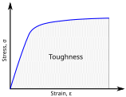
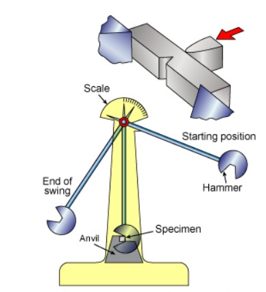

Toughness
The work done during the deformation of a material is stored in the form of strain energy. Toughness is defined as the total strain energy absorbed by a material up to the point of fracture (the total work done at fracture). On a stress-strain diagram, toughness is represented by the entire area under the curve. Because of this, ductile materials generally possess far greater toughness than brittle materials.

Impact Testing
Toughness is physically measured using an Impact Test on a notched specimen. An impact load is applied via a swinging hammer. The energy lost by the hammer during the swing is read on a scale as the material's toughness.

Ductile-Brittle Transition
Whether a material behaves as ductile or brittle is heavily dependent on temperature. As temperature is lowered, ductile materials can begin to exhibit brittle behavior. This is known as the Ductile-Brittle Transition.
- In BCC metals (like steel), a sudden and sharp change in behavior is observed over a narrow temperature range. The middle value of this range is called the Ductile-Brittle Transition Temperature (DBTT).
- In FCC metals (like copper), this transition is gradual, lacking a sharp sudden drop-off.
Practice Exercises
Test your knowledge on Toughness and Impact Testing.
1. How is Toughness defined in materials science?
A) The maximum stress a material can withstand
B) The total strain energy absorbed by a material up to fracture
C) The resistance of a material to localized indentation
2. How is toughness visually represented on a Stress-Strain diagram?
A) As the total area under the curve
B) As the peak highest point on the curve
C) As the slope of the initial linear line
3. Which setup is commonly used to physically measure a material's impact toughness?
A) A diamond pyramid indenter
B) A swinging hammer striking a notched specimen
C) A slow, constant pulling machine with an extensometer
4. What does DBTT stand for?
A) Deformation By Tension Test
B) Ductile-Brittle Transition Temperature
C) Dynamic Bending Toughness Threshold
5. Which lattice structure experiences a sharp, sudden ductile-to-brittle transition as temperature drops?
A) BCC (like Steel)
B) FCC (like Copper)
C) Both BCC and FCC experience it identically